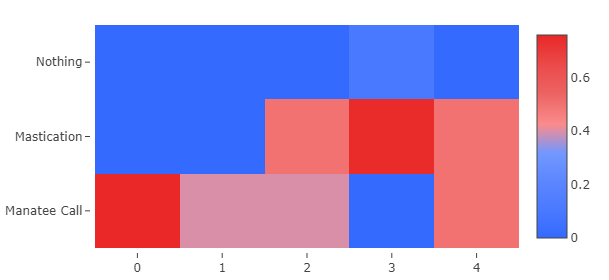

How can anyone contribute a new visualization type?
If this could be somewhat streamlined there could be potentially a good repository of additional visualization options.
In my case I need to have a more flexible mapping viewer, that supports my own polygons to color according to queries results. We could use esri, wms, mapbox, google, etc… Each has its own set of config parameters, and js api.
The end goal is to have a plugin based visualizaiton system, so you can add visualizations without changing your Redash deployment.
Until then, you can add new visualization by extending the current code base. Redash uses Angular to build the UI, so to create a new visualization you need to create two directives (components): render directive that “draws” the visualization and editor directive that takes user configuration for this visualization. Then you register them with the visualization system and Redash takes the rest.
I’m going to create a new visualization soon, and will post the pull request link here for reference. Also will be happy to answer questions if anything isn’t clear, so we can later use this in the documentation for other who would like to create new visualizations.
Can we also have an updated guidelines to create new visualization types in React?
I noticed the codebase has changed alot after the migration and we have a different way of passing data to the visualizations. I think having a boilerplate like the one above for React would be very helpful.
Redash uses Angular to build the UI, so to create a new visualization you need to create two directives (components): render directive that “draws” the visualization and editor directive that takes user configuration for this visualization . Then you register them with the visualization system and Redash takes the rest.
Actually we been working hard the past year to move away from Angular to React (see #3071). While our codebase is still hybrid (both Angular and React) the visualizations codebase for the most part is React only. You can see status in #3301, but the gist is: everything has been converted except for Map and Charts Editor which are in progress.
But the idea is indeed the same: a visualization is defined by the Editor component and Renderer component along with some administrative code to register it, so the interface knows to show it.
Until we have the time to create a boilerplate, you can check the Pivot table visualization source code as a simple example:
React example is great and easy to understand, but I can’t figured out do I need to rebuild whole image with docker. I mean with sources or is there way to extend official image? My problem is that I cant see the new visualization types.
But where is it? I cannot find it on the list of available visualizations. I see in your blog that it is availablre in version 6 , but I cannot find it.
One more question, what time format does heatmap accept? I tried dd/mm/yy hh:mm:ss and it did not work (my data source is google sheets), I need time precision up to seconds. But when I used simple numbers like hour 0, 1, 2,3 the heatmap worked. It looks like it does not recognize my date/time format even though I selected it in X variable axis scale.
I need date/time on X axis instead of what I have there now, i.e. 1,2,3, etc

Login or sign up disabled while the site is in read only mode
{kind=link}